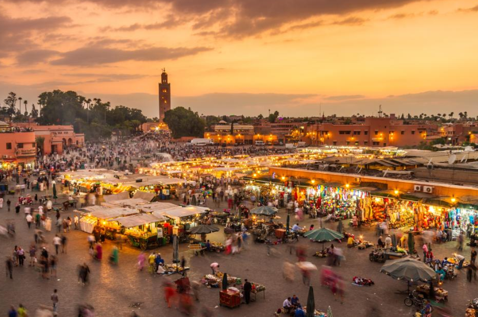
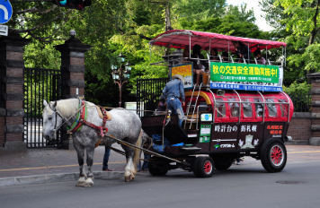
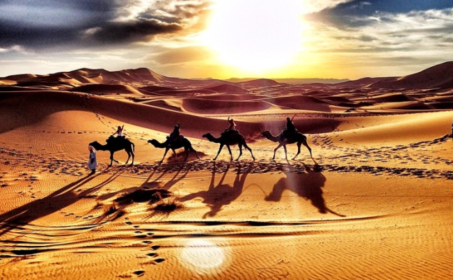
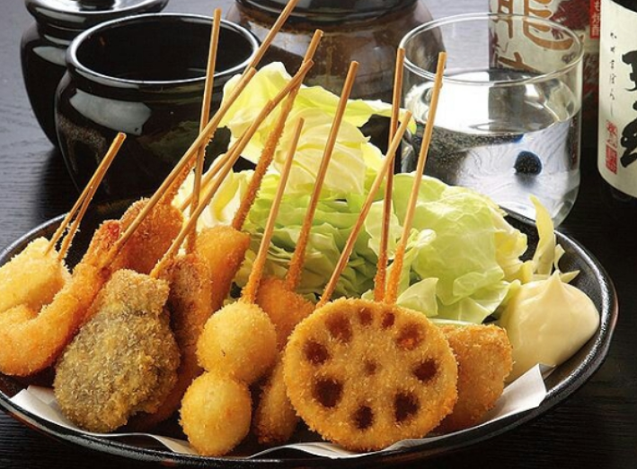

1. Africa
아프리카의 붉은 보석, 모로코
▶ 여행시기: 6월 ~ 8월
▶ 추천 장소
|  | 많은 여행자들이 마라케시에서 모로코 여행을 시작하고 이곳을 거점 삼아 사하라 사막 투어를 다녀오곤 한다. 모로코에서는 도시의 중심 지역을 '메디나'라 부르는데 과거 침입한 적군이 대거 밀고 들어올 수 없도록 좁은 골목길을 미로처럼 만들었다고 한다. 그래서 메디나의 중심 제마 알프나 광장을 시작으로 아무 생각 없이 골목길을 걷다 보면 빠져나오기 힘든 미로에 갇혀 버릴 수도 있으니 항상 정신을 똑바로 차리고 다녀야 한다. |
|  | 온갖 생필품부터 모로코의 특산품과 기념품을 판매하는 노점상들이 넘쳐나고 포장마차처럼 늘어선 식당에선 음식 냄새가 끊임없이 유혹을 한다. 그 밖에도 뱀쇼 등을 비롯한 진기한 쇼를 보거나 마차를 타고 천년의 도시를 돌아보기, 순식간에 그려주는 헤나 타투를 해보는 것도 마라케시를 즐기는 좋은 방법이다. 하지만 호객행위와 바가지, 소매치기가 많기 때문에 흥정은 필수, 한시라도 긴장을 늦추지 말아햐 한다. |
|  | 그 밖에도 웅장한 다데스 협곡, 토드라 협곡을 비롯해 겨울엔 눈으로 뒤덮인 설산까지 만나볼 수 있다. 모로코 여행의 하이라이트! 낙타 타고 사하라 사막 한 바퀴, 그리고 현지의 다양한 음식을 먹어보는 것도 여행 코스의 일부라고 생각한다. |
|  | 그중에서도 가장 즐겨먹는 음식이 바로 쿠스쿠스이다. 쿠스쿠스는 밀가루 반죽을 잘게 썰어 쌀알처럼 조그맣게 만들어 익힌 파스타라고 생각하면 되는데 이 역시 각종 야채, 양, 소, 생선과 함께 조리해 먹는다. 모로코 여행을 하다 보면 쿠스쿠스는 매일 한 끼 이상 먹게 될 것이다. |